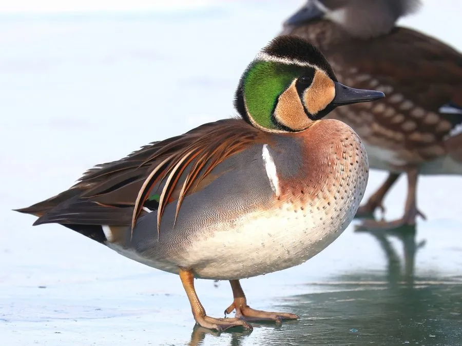

鸟类 · 动物界
花脸鸭 Sibirionetta formosa

雄鸟脸部和头顶有黄黑相间的“花脸”纹样的鸭类，繁殖于西伯利亚东部，冬季迁到中国东部和日本越冬。
- 分类
- 门脊索动物门纲鸟纲目雁形目科鸭科属花脸鸭属
- 栖息环境
- 湖泊、河流、水库、水田与沿海湿地，常成群活动
- 地理分布
- 繁殖于俄罗斯西伯利亚东部和中国东北，越冬于中国东部、朝鲜半岛和日本
- 保护级别
- IUCN 无危（LC）；中国国家二级保护动物
物种志
花脸鸭体长 38–43 cm，体重 400–700 g。繁殖期雄鸟头脸部有黄黑相间的复杂花纹，像画了花脸，因此得名；胸部呈淡黄色并具黑色斑点，背部灰褐色，胁部灰色，尾羽暗色。雌鸟通体棕褐色并带斑纹，喙基部有白斑。
花脸鸭繁殖于俄罗斯西伯利亚东部和中国东北，冬季南迁到中国东部、长江流域、朝鲜半岛和日本越冬。它们栖息在湖泊、河流、水库、水田和沿海湿地，以水生植物、谷物和昆虫为食，常成群活动。繁殖期在水边草丛中营巢，每窝产卵 6–10 枚，孵化 24–26 天。由于栖息地减少和过度狩猎，花脸鸭种群数量下降，被列为国家二级保护动物。
形态与习性
- 食性水生植物、谷物和昆虫
- 体长38–43 cm
- 体重400–700 g
- 繁殖每窝 6–10 枚卵，孵化 24–26 天
- 特征雄鸟脸部黄黑相间的花纹像画了花脸
- 寿命野外约 10 年
趣味知识
- 花脸鸭雄鸟的脸部有黄黑相间的花纹，像画了一张花脸，因此得名。
- 它们繁殖于西伯利亚东部，冬季到中国东部和日本越冬。
- 花脸鸭在中国被列为国家二级保护动物，种群数量因狩猎和湿地减少而下降。